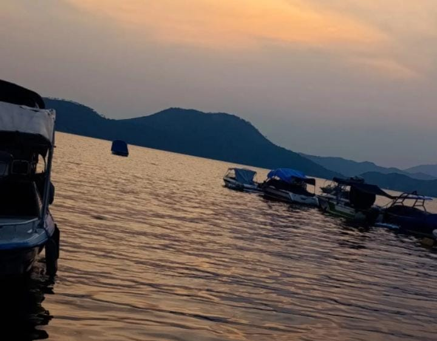
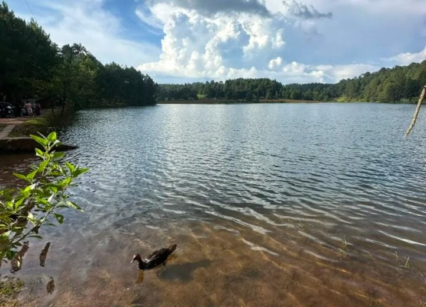
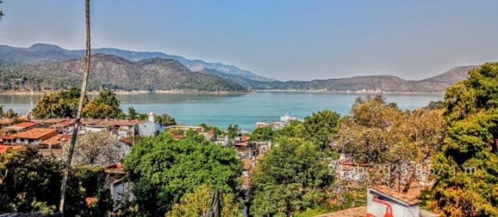
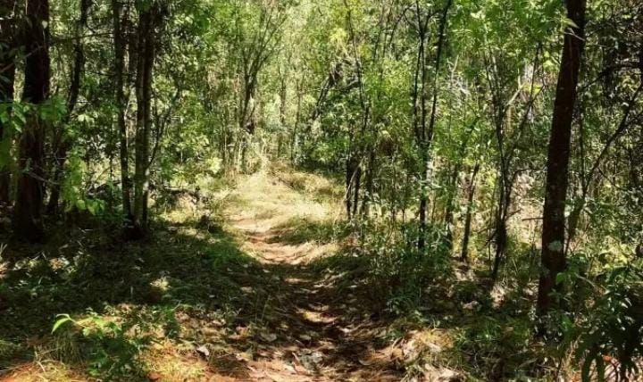
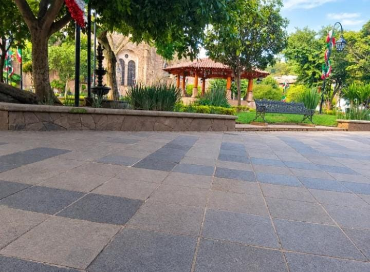
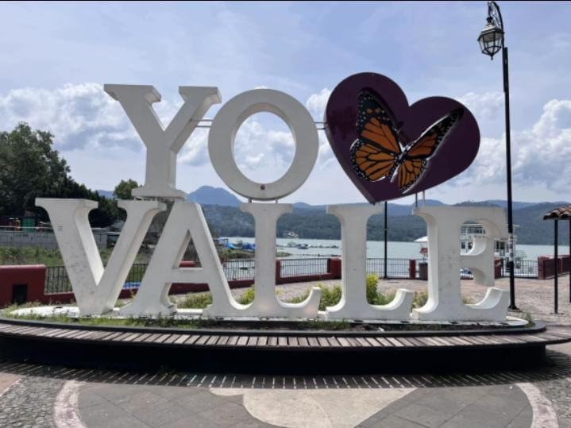

TURISMO VALLE DE BRAVO
Lugares de turismo en nuestro pueblito mágico

Embarcadero de Valle de Bravo
“Un lugar con diversas actividades.”
Como; * Lancha *Canoa *Barco con Hotel *Barco con Restaurante

Laguna Negra
"Lugar turísticos, que queda rumbo al Pinal del Marquesado."

Torre Valle de Bravo
"Lugar donde hay actividad de parapentismo."

Cerro Colorado
“Ruta para realizar actividades de ciclismo.”

Kiosco del Centro de Valle de Bravo
“Centro turístico de Valle de Bravo, ya que es el corazón de Valle, donde muchas personas pasan por ahí, también es un lugar amoroso como de película.”

Yo Amo Valle
“Letrero mas visitado que se encuentra en los puentes de Valle de Bravo con vista a la laguna"